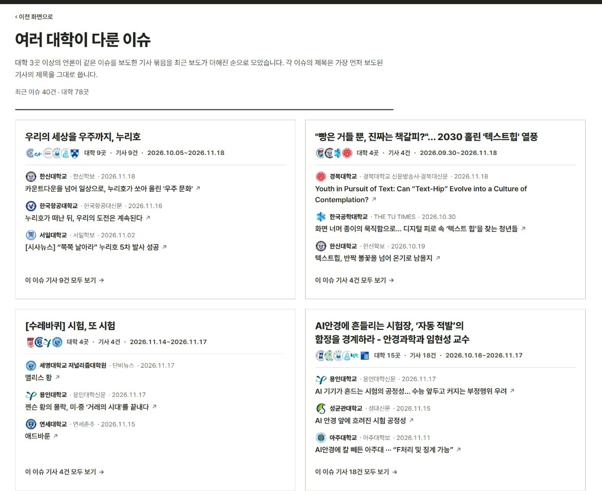

SEOUL — Stories from Korea's student newspapers, campus broadcasters, campus magazines and English-language papers sit on a different website for every school. Even for things many schools go through at once, like tuition hikes or student council elections, you had to open each site to see how another school's paper covered it. At the Jodae Sinmun newsroom, other universities' papers arrived in heaps every week. They piled up like trash, so much that someone was on duty to throw them out.
Campus Press Hub lets readers find those stories in one place. They can filter by section (campus, society, culture, academia, people, opinion, broadcast), outlet type, date and format (article, video, PDF, print page), and follow up to three universities. English-language stories have their own search.

Four editorial calls
One: no full-text republishing. The hub links to originals instead of copying them. It publishes its collection policy and a transparency report, and gives each outlet a channel to request corrections or removal.
Public documents: Collection policy · Transparency report · Corrections and removal requests
Two: I threw out the first design. Another AI tool produced a "wall-poster newsroom" concept. I judged it wrong for readers and had the design redone from scratch. While revising, I cut the save-article feature and the phrase "my university." I judged that readers wouldn't use either.
Three: the admin screens don't need to be pretty. The staff console uses the same design framework as the reader site, but I asked for speed over polish. One screen shows whether outside connections such as translation, public data and alerts are working.
Four: anything AI writes is labeled as AI-written. AI writes the monthly briefing. The menu itself says "written by AI," so it never blends in with reporters' work.
How I checked
I can't read code, so I set my own way to check results. I clicked through every screen as a reader would, looking for anything that felt off. I had fixes made, then clicked through again, over and over. I told the AI to mark anything ambiguous "on hold" instead of fixing it on a guess.
That is how we found why the home page was slow. Each page load made dozens of database round trips; we cut that to single digits and added an automated check that counts them so the number can't creep back up.
In October 2026 I audited search visibility. Google Search Console showed 186 pages indexed and 704 excluded. Of 1,184 sitemap URLs, 125 led to university pages with no stories. After the sitemap and page metadata were fixed, indexed pages reached 9,120 by November 20.